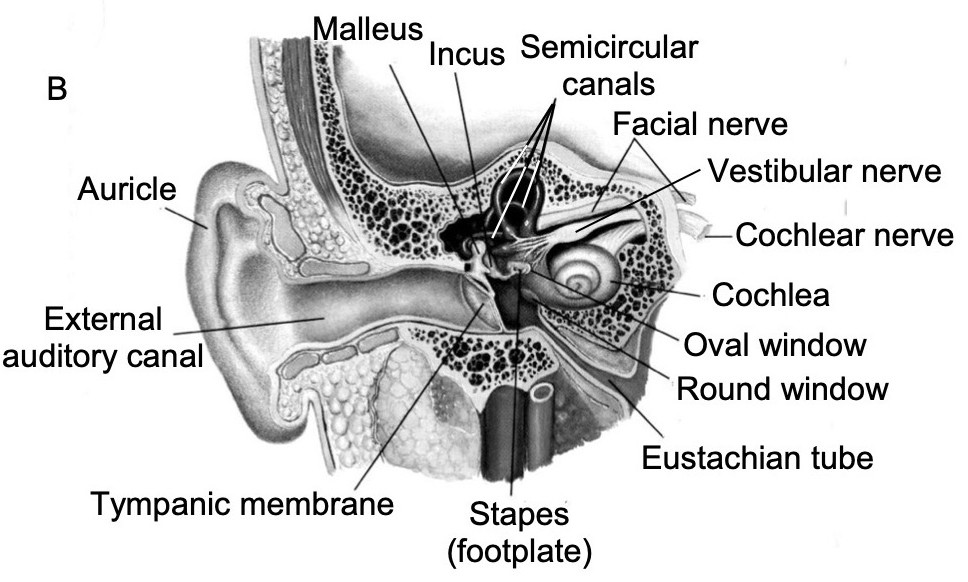

Will Styler - LIGN 113
The Traveling Wave
Frequency Tuning
The Cochlear Amplifier
Otoacoustic Emissions


Try and squeeze a coke can
The wave doesn’t ‘go from the oval window to the round window’
All of this is instantaneous
Input at oval window creates a pressure difference between scala tympani and vestibuli
The basilar membrane deforms accordingly
… and the pattern of deformation changes depending on the input frequencies
This deformation is referred to as…
It means that the wave ‘travels’ along the BM depending on frequency
Not that it’s ‘traveling’ directly, except in the ‘speed of sound in fluid’ sense
Don’t give me ‘wave moves from the stapes towards the apex of the cochlea’ arguments please!
Different frequencies cause deformation at different parts of the BM

Chewing
Head movement
Your pulse, constantly
Room-sized resonances

The traveling wave doesn’t require sound to come in through the stapes/oval window
Anything that introduces hydromechanical movement into the bony labyrinth
This is how we diagnose conductive vs. cochlear loss


Passive Mechanism: Different frequencies affect different parts of the BM
Active Mechanism: Outer Hair Cells actively assist in tuning BM vibration
They make quiet sounds seem louder to the IHCs
… but they also help with frequency tuning!


When the stereocilia bend, the intracellular potential changes
This triggers them to contract
Movement causes more movement
We can both increase and decrease the cochlear amplifier some
OHCs are pretty neat, but their physiology isn’t as well understood

Inability to discriminate frequency differences well
You end up with a ‘smeared’ spectrum
The ‘spectral envelope’ becomes more important than the peaks


So the hearing left is quiet and blurry
Be kind to your OHCs!
“The relative contributions of the passive and the active properties of the organ of Corti in defining the tonotopic frequency map of the cochlea are poorly understood. In nonmammalian species, frequency specificity occurs at the level of the hair cell, and some phylogenetic remnant of this property probably remains in the mammalian cochlea…”
“… Certainly, hair cell morphology changes along the length of the cochlear duct, with longer OHCs at the base and shorter OHCs at the apex. Additionally, there are spatial variations in the mechanosensitive stereociliary bundles that might determine frequency selectivity. However, a distinct role for hair cell tuning within the mammalian cochlea has not been identified.
The base handles high frequencies, the apex handles low frequencies
This is the opposite of what we might expect

Very slightly after the stapes does
Wait a second…

We can hear the amplified movements of the basilar membrane!
The stapes and ossicular chain and TM are just as much a speaker as a microphone
We measure passive and active OAEs
Stick a sensitive microphone into the ear canal
Play a pair of sounds into the cochlea
Listen for subtly distorted echoes returning
Stick a sensitive microphone into the ear canal
Play a click into the cochlea
Listen for the response
Over 70dB: We know that the basilar membrane is shaking and echoing
60 or 55dB: We can assume normal hearing
The sound must be able to get to the cochlea (thus, no substantial conductive loss)
We know the OHCs are doing their amplification work
It’s also diagnostic for 8th Nerve problems
Checks cell function without behavior
Works on sleeping, comatose, or newborn folks
Anybody can be OAE tested
Strong evidence suggesting a child is possibly deaf within hours of birth is helpful
Early knowledge about a child’s sensory experience gives parents the ability to start learning sign to interact with their child
It is an objective good to know which modality/modalities of language children can readily develop ASAP before they start trying to develop language!
“Wow, we’re not getting any OAEs at all, but the patient reports sensation of loud sound”
“Hmm, bad hearing, but the OAEs are there and robust…”
“No hearing, no OAEs, but the patient hears bone conduction stimuli just fine”
“Great OAEs at very low levels, but the patient reports no hearing at all”
“If this drug starts shutting down the mechanisms of hearing, we want to know quickly!”
3-6 dB of change represents a significant change in hearing
The BM moves due to the hydromechanical movements associated with sound entering the cochlea
The OHCs move the tectorial membrane to amplify sounds
This happens both due to physical movement, and with neural control
This process increases our frequency sensitivity
… and results in OAEs, which are useful to measure